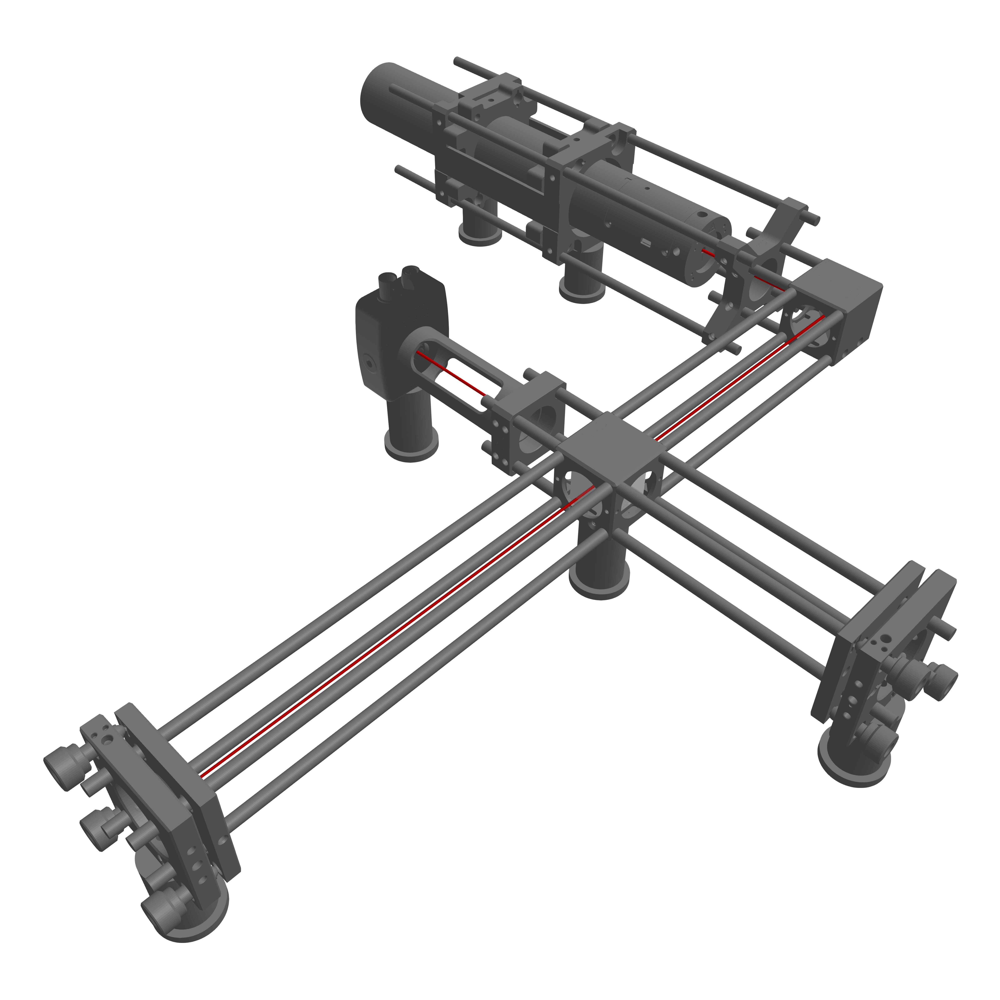
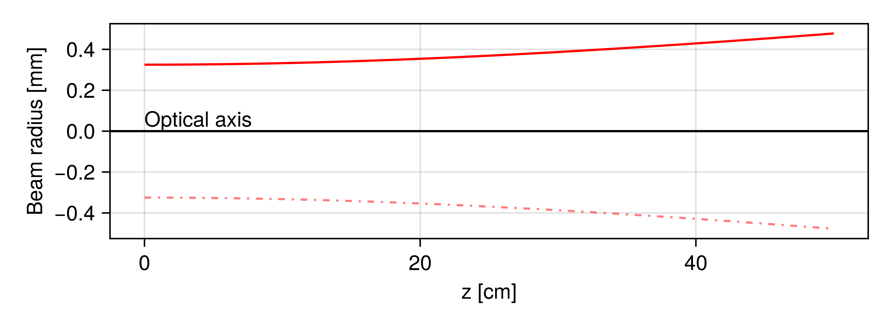
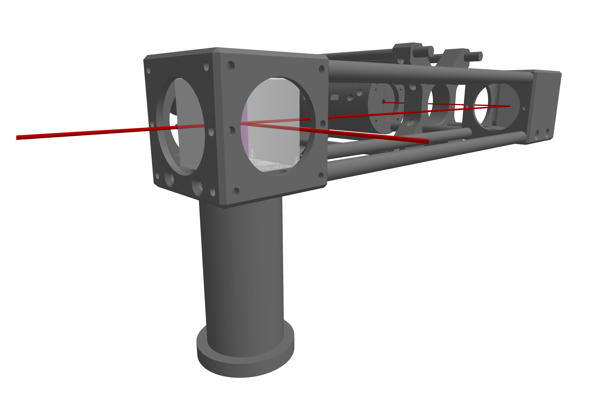
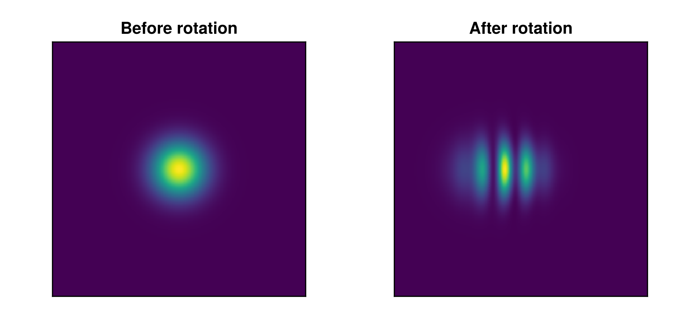
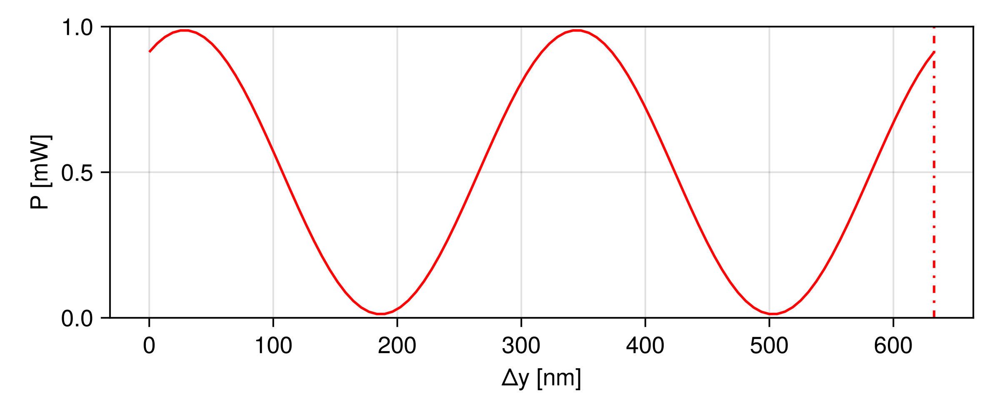

Michelson interferometer
In this tutorial, a simple Michelson Interferometer will be built step by step, using some core functions and components of this package. You will learn how to:
- Define a simple laser source representation (i.e. a
GaussianBeamlet). - Create and position optical elements (splitter, mirrors).
- Add a
Photodetectorto capture interference patterns. - Run a simple simulation featuring moving components

This package uses Makie for visualization purposes. However, it is not imported directly as part of this package. You must install it manually e.g. via ] add GLMakie into your current project environment. When both Makie and this package are loaded – that is via using GLMakie, BeamletOptics – the Makie extension of this package will become available.
How to follow this tutorial
All figures you will see below are pregenerated. The full code and all 3D assets are available in the following files:
using GLMakie, BeamletOptics
const BMO = BeamletOptics
GLMakie.activate!()
file_dir = joinpath(@__DIR__, "..", "assets", "mi_assets")
include(joinpath(file_dir, "michelson_showcase.jl"))
include(joinpath(file_dir, "michelson_plots.jl"))┌ Info: Files located at:
└ path = "/home/runner/work/BeamletOptics.jl/BeamletOptics.jl/docs/build/assets/mi_assets"If you want to reproduce the tutorial by yourself, it is recommend that you use the following plotting code:
using GLMakie, BeamletOptics
# assume that there is a defined "system" and solved "beam"
fig = Figure()
ax = LScene(fig[1,1])
render!(ax, system)
render!(ax, beam, flen=1e-2)The flen keyword sets the plotted length of "infinite" beams to 10 cm. Using the LScene environment will allow for easy viewing of the optical system and beam path. When the system or beam change, the plot will not update automatically. Rerunning the plot code above is necessary in this case.
Specific constants and functions
For the context of this tutorial, the following constants and helper functions have been defined in the michelson_showcase.jl file
cm: corresponds to 1e-2 mmm: corresponds to 1e-3 mreset_beamlet: a helper function that resets an already solvedGaussianBeamletbeam path to its initial position and direction
Building the optical system
The optomechanical interferometer setup that will be shown below has been created in a CAD program using components from the Thorlabs product catalog. The parts were then exported in the .stl format in order to render them with Makie. It is important to note that they are for illustrations purposes only. The code used to load the optomechanical parts and position them in order to form the full interferometer setup can be found in the michelson_showcase.jl file. A step by step explanation for each component group can be found in the following sections.
HeNe laser source
The laser source for this interferometer will be a HeNe laser, e.g. the HRS015B. The manufacturer data specifies the following parameters:
- wavelength
λ ≈ 632.8 nm - waist diameter
d0 ≈ 0.65 mm - beam divergence angle
θ ≈ 1.4 mrad
To represent the HeNe beam in code, we use the GaussianBeamlet with parameters derived from the manufacturer data. The snippet below demonstrates how to initialize the beam. We can calculate the ideal divergence angle of the beam for the given wavelength and waist diameter and derive the beam quality factor M² from there.
λ = 632.8e-9
w0 = 0.65e-3 / 2
θ_ideal = BeamletOptics.divergence_angle(λ, w0, 1) * 1e3
M2 = 1.4 / θ_ideal
beam = GaussianBeamlet(
[0.0, 0.0, 0.0], # Beam origin
[0.0, 1.0, 0.0], # Propagation direction (y-axis in this example)
λ,
w0;
M2
)┌ Info: Beam quality factor is:
└ M2 = 2.258888523045758Below you can find a rendering of the HRS015B laser in a HCM2A/M cage mount, illustrating how the laser tube and output beam might appear in your optical setup. For the purpose of this tutorial the beam spawn point is set at the center of the laser mount and aligned with its central axis. This might not be the case in practice.
It is important to note that the use of a single GaussianBeamlet for the interferometer model places some constraints on the fidelity of the simulation. That is, the effects of spherical abberations, polarization abberations and astigmatism can not be fully or correctly captured. Refer to the Gaussian beamlet section for more information.
Calculating beam parameters
To gain deeper insight into the evolution of the Gaussian beam as it propagates, you can use the BeamletOptics.gauss_parameters function. This function computes several key metrics at a series of positions along the beam optical axis:
zs = 0:1e-3:50cm
w, R, ψ, ~ = BeamletOptics.gauss_parameters(beam, zs)The returned values are
w: Beam radius (1/e² intensity radius) at each position z.R: Wavefront curvatureψ: Gouy phase, which quantifies the phase shift relative to a plane wave.
The figure below shows a plot of the beam radius as a function of the propagation distance z (the beam is actually aligned with the y-axis for the beam simulation). The solid red curve indicates the beam’s upper waist boundary, while the dashed red curve (below the optical axis) shows its symmetric lower boundary. As the beam propagates, you can see how the waist gradually expands due to combined effects of wave and ray optics.

Setting up a mirror
In many optical systems, you will need to position mirrors to adjust the path of a beam through an optical system. In this example, we will use a RightAnglePrismMirror and place it in our system. By using the kinematic API, one can easily rotate and translate the prism to the desired position. Note that the mirror is spawned at the global origin.
# Spawn and move the mirror into position
rpm = RightAnglePrismMirror(25e-3, 25e-3)
zrotate3d!(rpm, deg2rad(45)) # rotate the mirror counter-clockwise by 45° around the global z-axis
translate3d!(rpm, [0,23.5cm,0]) # translate the mirror by 33.5 cm along the global y-axis
system = System([rpm])
solve_system!(system, beam)Once the mirror is in place, we can run the simulation to see how the beam interacts with the newly positioned mirror using the solve_system! function. Below is a visualization of the setup, showing the HeNe laser and the right-angle prism mirror mounted in a CCM1-P01/M cage mount.
Placing the beamsplitter
The beamsplitter splits the beam into a reference and probe beam path. In this step, a 1" CubeBeamsplitter with a splitting ratio of 50% will be placed within the system, along with the previously defined mirror. Refer to the Cube beamsplitter section for more information. We also reset the beam to ensure we start from its original parameters before propagation through the new configuration:
reset_beamlet!(beam)
# define NBK7 ref. index for λ
NBK7 = DiscreteRefractiveIndex([632.8e-9], [1.51509])
cbs = CubeBeamsplitter(BeamletOptics.inch, NBK7)
# move splitter into position
zrotate3d!(cbs, deg2rad(-90))
translate_to3d!(cbs, [18.81cm, 23.5cm, 0])
system = System([rpm, cbs])
solve_system!(system, beam)The following image shows the cbs, e.g. a cage-mounted BS013, and the resulting reflected and transmitted beams.

By adding two additional RoundPlanoMirrors that reflect the beams back into themselves we can overlay the probe and reference beam after they pass the cbs again.
m1 = RoundPlanoMirror(BeamletOptics.inch, 5e-3)
m2 = RoundPlanoMirror(BeamletOptics.inch, 5e-3)
# Move and turn mirror 1
zrotate3d!(m1, deg2rad(-90))
translate3d!(m1, [42.715cm, 23.5cm, 0])
# Move mirror 2
translate3d!(m2, [18.81cm, 37.405cm, 0])
system = System([rpm, cbs, m1, m2])
solve_system!(system, beam)The following figure shows two 1" mirrors mounted in KC1L/M kinematic mounts. Note that while the realigned return probe and reference beams exit the interferometer, a part of the light is involuntarily reflected back into the laser itself.
Adding the detector
The final step in creating a functional interferometer simulation is to add a Photodetector that captures the field data of the incoming beamlets.
reset_beamlet!(beam)
# define detector with 8x8 mm active area and 200x200 resolution
pd = Photodetector(8e-3, 200)
# move detector into position
translate_to3d!(pd, [18.81cm, 9.595cm, 0])
system = System([rpm, cbs, m1, m2, pd])
solve_system!(system, beam)Below you can find a rendering of the interferometer with the PDA10A2 Si-detector. The device is connected to the cage system with a SM1L30C lens tube and a CP33T/M adapter. Once the solve_system! command has been executed, you can inspect the detector’s data to observe interference fringes and measure optical power. This typically involves examining the detector’s stored field array, which will be discussed in the next section.
With the detector in place, the Michelson interferometer is now fully "operational". You can adjust mirror positions, beamsplitter properties, or laser parameters to explore how each change influences the simulations results and gain hands-on experience with the capabilities of this package.
Visualizing the fringes
Once the beam has been split, reflected, and recombined on the pd, you can visualize the resulting intensity distribution to observe interference effects. In many interferometer setups, small adjustments – such as rotating a mirror or slightly shifting its position – introduce a spatial difference between the wavefronts of the beams, causing interference fringes to appear. Below is a comparison of the photodetector’s intensity data before (left) and after a slight rotation of mirror m1 by 1 mrad (right). Initially, the wavefronts may overlap closely in space, producing a relatively uniform spot. After rotation, the mismatch occurs, creating a series of bright and dark fringes due to constructive and destructive interference:

You can recreate this figure by running the following code:
fringes_fig = Figure()
heat1 = Axis(fringes_fig[1, 1], aspect=1)
heat2 = Axis(fringes_fig[1, 2], aspect=1)
hm = heatmap!(heat1, pd.x, pd.y, BeamletOptics.intensity(pd), colormap=:viridis)
# rotate m1, reset pd field data, resolve system
zrotate3d!(m1, 1e-3)
empty!(pd)
solve_system!(system, beam)
hm = heatmap!(heat2, pd.x, pd.y, BeamletOptics.intensity(pd), colormap=:viridis)By experimenting with different mirror angles, arm lengths, or beamsplitter properties, you can observe how interference fringes evolve and gain insights into the stability and sensitivity of the interferometric setup. This can be important to optimize alignment and achieve high contrast fringes.
Many steps of the simulation process mutate the data structures of the system and beam. If you run the above code multiple times odd effects might occur, since with each run the mirror is moved by one mrad. This is also important for the use of the correct use of the detector via the empty! function. For more information, refer to the Detectors chapter.
Running successive simulations
Finally, we will run a sequence of "single-shot" simulations where we capture the integrated optical power on the photodetector for each step. This will allows us to simulate the kinematic behavior of the system. For this example, we will translate the mirror m2 along the y-axis and investigate the resulting power signal. In order to achieve this, we translate m2 in tiny increments via the translate3d! function. However, first we reset the rotation of m1 introduced in the previous section in order to increase the interferometric contrast again. The code for this part of the tutorial looks as follows:
# reset the 1 mrad z-axis rotation from the prev. section
zrotate3d!(m1, -1e-3)
# calculate the translation step for a total mirror movement of one wavelength λ
n = 100
Δy = λ/n
# Allocate optical power result vector
P = zeros(n+1)
# Run sim
for i in eachindex(P)
empty!(pd)
solve_system!(system, beam)
P[i] = BeamletOptics.optical_power(pd)
# translate by Δy
translate3d!(m2, [0, Δy, 0])
end
# x-axis values
ys = LinRange(0, n*Δy, n+1)
# plot Figure
power_fig = Figure(size=(600, 250))
power_ax = Axis(power_fig[1, 1], xlabel="Δy [nm]", ylabel="P [mW]",)
lines!(power_ax, ys*1e9, P*1e3, color=:red)
vlines!(power_ax, λ*1e9, color=:red, linestyle=:dashdot)
ylims!(power_ax, 0, 1)Below is the resulting figure, illustrating the power oscillation as the mirror translates from its starting position to Δy = λ, marked by the dashed red line. It can be observed that the optical power does not reach 0 mW or the full 1 mW of the input laser power. This is because of the slight difference in arm length between the probe and reference beams. Also, the resulting power curve features two periods whereas the translation only corresponds to a movement of one wavelength. This is because the mirror movement by a single Δy step will cause a total increase of 2 ⋅ Δy in path length difference.
